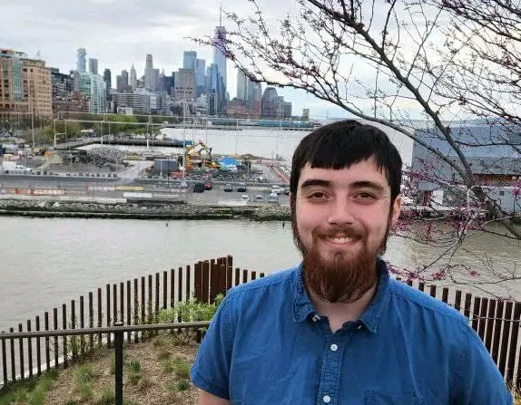

Home
Contact
About
Project Downloads
Home
Contact
About
Project Downloads
Hello, I'm Ethan Nguyen, a mechanical engineering student with a passion for sustainable design and technology. Based in Orlando, Florida, I'm in my senior year at the University of Central Florida, pursuing a bachelor's degree in mechanical engineering with a minor in computer science.
My technical skills span multiple disciplines, including advanced proficiency in design software including Autodesk Revit, Solidworks, and ANSYS, programming experience in C/C++, Python, Matlab, and Java, and strong project management and leadership capabilities developed through real-world applications
Since 2019, I've worked as a Laboratory Technician at Valencia College, where I've Redesigned inventory management systems, developed training protocols for new team members, and demonstrated versatility by successfully working across multiple departments. I'm currently leading a team for the U.S. Department of Energy Solar Decathlon, where we're applying engineering principles to create sustainable multifamily housing in Cocoa, Florida. This project allows me to combine my technical expertise with my commitment to environmental sustainability as we work alongside real estate developers to create affordable, eco-friendly housing solutions. My commitment to creating accessible housing began with my volunteer work at Habitat for Humanity in Tampa, where I assisted in construction projects and learned the importance of thoughtful design that meets individual client needs.
After beginning my studies at UCF in 2017, I returned in 2023 to complete my degree. I'm proud to have earned a place on the dean's list for consecutive semesters in 2024 and look forward to graduating in May 2025. I'm passionate about combining engineering principles with sustainable practices to create practical solutions for real-world challenges. As I approach graduation, I'm excited to explore opportunities where I can apply my diverse skillset to projects that make a positive impact on communities and the environment.
